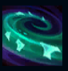
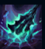
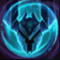
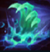
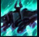

Mordekaiser
| Mordekaiser The Iron Revenant | |
|---|---|
| Release date | 24.02.2010 |
| Class | Juggernaut |
| Positions | Top |
| Resource | Shield |
| Range type | Melee |
| Adaptive type | Magic |
| Base statistics | |||
| Health | 575 – 2105 | Resource | N/A |
| Health regen. | 5 – 17.75 |
Secondary Bar | Shield |
| Armor | 37 – 88 | Attack damage | damage61 – 129 |
| Magic resist. | 32 – 53.25 | Crit. damage | 175% |
| Move. speed | 335 | Attack range | 175 |
Renăscând din cenușă după fiecare moarte, Mordekaiser este un despot brutal dintr-o epocă demult uitată. Acum, își folosește magia necromantică pentru a înrobi pe vecie sufletele muritorilor. Deși doar câțiva dintre cei care-și amintesc de cuceririle sale sau de adevăratele lui puteri mai sunt în viață acum, unele spirite antice nu l-au uitat niciodată. Aceștia se tem de ziua în care Mordekaiser se va întoarce pentru a pune stăpânire pe ambele tărâmuri: al morților și al celor vii. |  |
APOGEUL ÎNTUNERICULUI După ce lovește campionii inamici cu 3 atacuri sau vrăji, Mordekaiser primește un bonus la viteza de mișcare și o aură care provoacă daune semnificative. |
||
|---|---|---|---|---|
 |
ANIHILARE Mordekaiser își izbește buzduganul de pământ, provocându-le daune tuturor inamicilor loviți. Daunele cresc dacă lovește un singur inamic. |
|||
 |
INDESTRUCTIBIL Mordekaiser stochează într-un scut daunele pe care le provoacă și le suferă. Poate consuma scutul pentru a se vindeca. |
|||
|  |
ÎMBRĂȚIȘAREA MORȚII
Mordekaiser trage toți inamicii dintr-o zonă. |
|||
 |
TĂRÂMUL MORȚII Mordekaiser ia cu el victima într-o altă dimensiune și îi fură o parte din atribute. Dacă o ucide, păstrează atributele până când victima reînvie. |